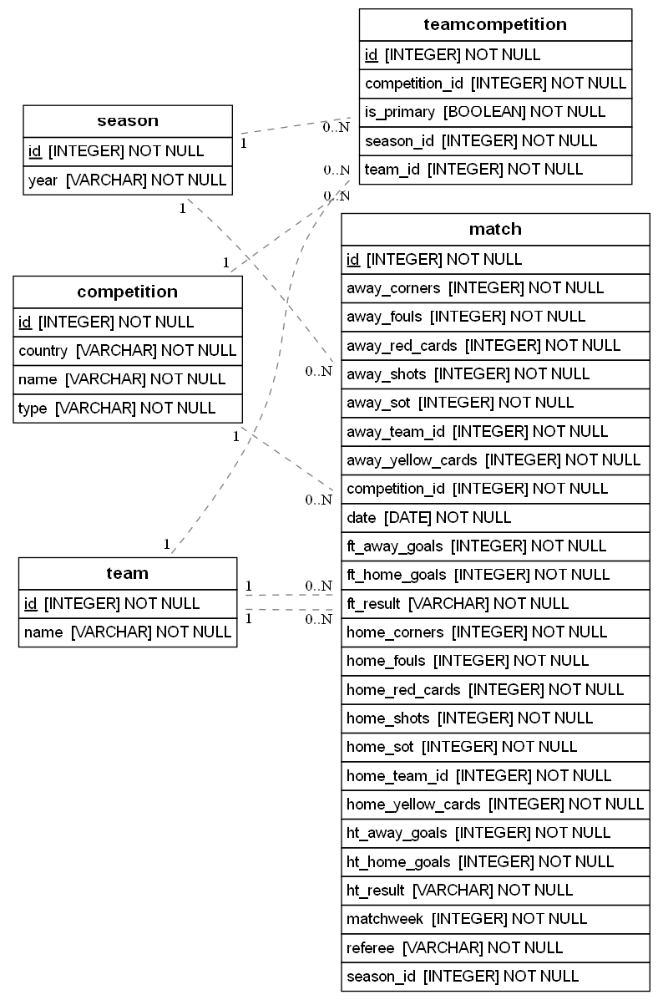
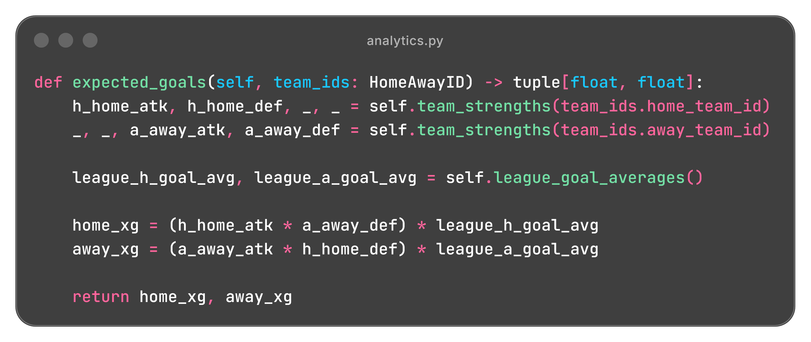
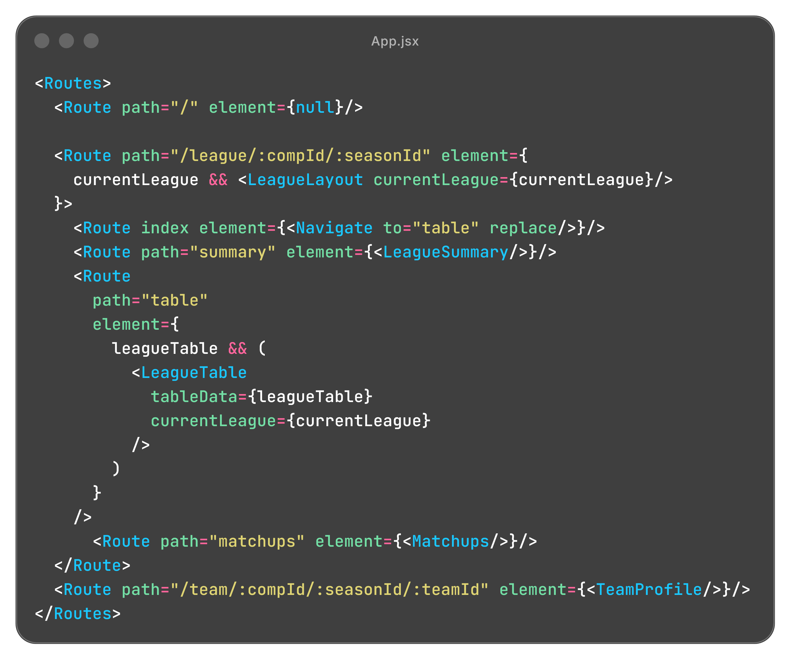

Python • FastAPI • React • SQLModel • SQLite
In Development
View GitHub RepoA full stack soccer analytics and prediction application built with React and FastAPI, using historical match data to present league, team, and matchup statistics. The project uses normalized team strengths and a Poisson based model to calculate expected goals, win probabilities, and most likely scorelines.
The application is split into a React frontend and FastAPI backend, with separate layers for API routing, relational data models, and soccer analytics. The backend exposes league, team, and matchup data through REST endpoints while the React interface organizes those responses into route driven views.
soccer-prediction-app/
├─── backend/
│ ├─── main.py
│ ├─── analytics.py
│ ├─── database.py
│ ├─── models.py
│ ├─── schemas.py
│ ├─── seed.py
│ └─── data/
│ └─── ...
└─── frontend/
├── src/
│ ├─── App.jsx
│ ├─── main.jsx
│ ├─── App.css
│ └─── components/
│ ├─── LeagueLayout.jsx
│ ├─── LeagueSummary.jsx
│ ├─── LeagueTable.jsx
│ ├─── Matchups.jsx
│ ├─── TeamProfile.jsx
│ └─── ...
├─── package.json
└─── vite.config.js
main.py defines FastAPI routes for league summaries, standings, historical
matchups, team profiles, and prediction results while using dependencies to provide
database sessions and analytics context.
analytics.py contains the statistical calculations used by the API,
including league scoring averages, team attack and defense strengths, expected goals,
Poisson probabilities, outcome rates, and league table statistics.
models.py, schemas.py, and database.py define
the relational data structure, API response models, and SQLModel session handling for
teams, competitions, seasons, matches, and team competition membership.
App.jsx manages the application's primary routing and shared data, while
reusable components provide league summaries, standings, match history, team profiles,
charts, and season navigation.
seed.py contains the CSV ingestion and database seeding workflow used to
translate source datasets into the relational model. This part of the project is
currently being refactored as the ingestion process is generalized beyond the original
dataset.
Match data is stored in a relational structure that separates teams, competitions, seasons, and individual fixtures while preserving the relationships between them. This allows the same underlying data model to support league standings, team profiles, historical results, and matchup analytics without duplicating entity data.

Each club is stored once with a unique ID and name, allowing match records and competition memberships to reference the same team across the application.
Competitions and seasons are stored independently so match and membership data can be associated with a specific league and time period
Each match references its competition, season, home team, and away team through foreign keys while storing the result and match statistics used by the analytics layer.
TeamCompetition acts as a relational table connecting teams to the
competitions and seasons they participate in, allowing league membership to be
queried independently from individual match records.
Historical match data is imported from CSV files and translated into the relational database structure before it is consumed by the API or analytics later. The ingestion process handles source specific team naming, type conversion, database ID lookups, and matchweek assignment before creating match records.
A lookup table converts abbreviated or alternate source names into the canonical team names stored in the database.
Existing teams are loaded into a lookup dictionary so CSV team names can be translated into the foreign key IDs required by match records.
CSV values are converted into application types such as dates and integers before being used to create SQLModel objects.
When the source data does not provide an explicit matchweek, the importer tracks each team's games played to determine the corresponding round.
The original importer was designed around a specific dataset. The seeding workflow is currently being generalized so table loading, validation, and filename metadata parsing can support additional leagues and seasons with less dataset specific logic.
The application uses historical match results to calculate league scoring baselines and team specific attacking and defensive strengths. These values are combined into expected goal estimates and Poisson distributions that model possible scorelines and matchup outcomes.
Historical Match Results
↓
League Home / Away Goal Averages
↓
Team Attack / Defenses Strengths
↓
Matchup Expected Goals
↓
Home / Away Poisson Distributions
↓
Score Probability Matrix
↓
Win / Draw / Loss + Likely Scoreline
Home and away scoring averages are calculated independently for each competition and season, providing baseline values used throughout the prediction model.
Each team's home and away attacking and defensive performance is measured relative to the corresponding league scoring averages, producing normalized strength values for different match contexts.
For a matchup, the home team's attacking strength is combined with the away team's defensive strength and the league home scoring average. The same calculation is performed for the away side to produce separate expected goal values.

The expected goal values are used to generate scoring probabilities from 0 through 8 goals for each team using the Poisson probability mass function.
Home and away scoring distributions are combined into a score matrix representing possible match results. The matrix is grouped into home wins, draws, and away wins before the probabilities are normalized.
The highest probability cell in the score matrix is selected as the model's most likely final score.
The same analytics layer also calculates team win, draw, and loss rates, points per game, league table statistics, both teams to score rates, and the frequency of matches finishing with more than 2.5 goals.
The React frontend consumes the FastAPI backend to build league and team views from the same underlying statistical data. URL parameters identify the active competition, season, and team, allowing components to request the appropriate API data and update the interface as the user navigates through the application.
React Router organizes the interface around league and team URLs, with competition and season IDs carried directly through the route structure.

LeagueLayout provides a shared layout for league specific pages while
nested routes switch between the summary, standings, and historical matchup views.
Selecting a club from the league table navigates to a dedicated team route containing the competition, season, and team IDs required to retrieve its profile.
The season selector updates the active route, causing dependent components to request statistics for the newly selected season without requiring a separate page structure.
Frontend components request data from FastAPI based on the active route and manage their own loading, error, and response state.
The sidebar loads structured menu data from the backend and groups available competitions and seasons by country.
The summary view retrieves scoring averages, both teams to score rates, and over/under statistics, while the table view displays calculated league standings.
Match results are grouped by matchweek and presented in a navigable list with a matchweek selector for moving through the season.
Team profiles retrieve points per game, outcome rates, and normalized attacking and defensive strengths from a combined backend profile endpoint.
Statistical responses are transformed into reusable React and Rechart components rather than being displayed as raw API values.
Reusable donut charts visualize both teams to score and over/under 2.5 goal rates alongside season level summary statistics.
Team win, draw, and loss rates are presented as a stacked horizontal bar for quick comparison.
A radar chart displays normalized home and away attacking and defensive strengths for the selected team.
The original seeding process was built around a known dataset, so assumptions about filenames, table structure, team names, and validation could be handled directly inside the importer. As I began planning support for additional leagues and seasons, that approach became difficult to extend. I started separating filename metadata parsing, normalization, validation, and database loading into distinct responsibilities so the ingestion process could eventually work across multiple datasets without duplicating table specific logic.
Some backend routes that initially made sense in isolation became less useful once the React frontend began consuming them. As league tables, team profiles, season navigation, and historical match views developed, I refactored endpoints and analytics calls to consistently use competition, season, and team context and to return data in forms better suited to the interface. This taught me that API design is often iterative and that the needs of the frontend can expose weaknesses in an otherwise functional backend structure.
The application currently supports historical league and team analytics through a React frontend backed by FastAPI, SQLModel, and SQLite. The prediction model is implemented on the backend, while data ingestion and additional frontend prediction features are still being developed.